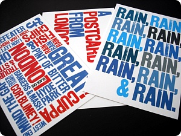
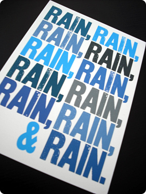

금요일날 친구기다리믄서
코벤트가든 paperchase 구경하다가 득템
타이포랑 색 넘이쁘다/// 그리고 웃겨 ㅋㅋㅋㅋ

정확히 요근래 날씨를 말해주고있는 엽서
요며칠 정말 암울했었는데
오늘은 좀 따닷했음 (그래도 역시 저녁되니까 춥더라)
이제 두꺼운옷 고만입고 싶어라~
겨울을 좋아하지만 이제 고만 되었어 충분해~~!!
따순 봄이 언능 왔음 좋겠어요;ㅂ;
(비도 촘 그만오고;;;)